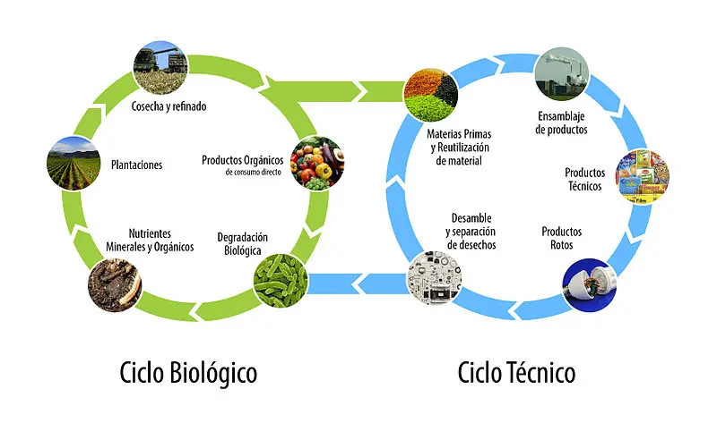

La economía circular como motor de cambio
Por Marta Sánchez
¿Qué es la economía circular?
La economía circular propone un cambio de modelo hacia una economía sostenible, basada en el principio de "cerrar el ciclo de vida" de los productos, servicios y residuos.
Este modelo se centra en reducir el consumo de recursos naturales, fomentar la eficiencia y promover el reciclaje y la reutilización.

"La economía circular no es solo reciclar, es repensar el sistema."
Beneficios para el medio ambiente
Adoptar estrategias circulares permite reducir la presión sobre los recursos naturales, disminuir la generación de residuos y combatir el cambio climático de manera efectiva.
Además, ayuda a la regeneración de los ecosistemas y promueve un uso más equitativo de los recursos a nivel global.
Resumen de acciones
- Reducir el uso de recursos no renovables
- Promover la reutilización y reparación
- Fomentar el reciclaje de materiales